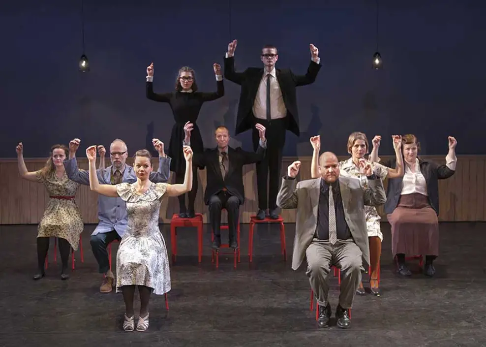

Vores Historie
Livingstones Kabinet blev grundlagt af instruktør Nina Kareis (Danmark) og komponist Pete Livingstone (Skotland).
De mødtes i 1994 på Edinburgh Festivalen, hvor de optrådte sammen hver aften på den legendariske Café Graffiti, en kabaret med prominente gæsteoptrædende som f.eks. The Tiger Lillies m. fl. Efter at være flyttet til København i 1996 fortsatte de deres arbejde som freelance kunstnere i teater- og performanceforestillinger i Storbritannien, USA og Danmark. Erfaringerne fra disse projekter inspirerede dem til at samle en gruppe ligesindede kunstnere i Danmark og de begyndte de at skabe egne forestillinger hvor musik, teater, koreografi og performance blev kombineret på nye og spændende måder. Livingstones Kabinet arbejder udfra devising metoden, hvor forestillingerne udvikles 'på gulvet' i et tæt og gensidigt inspirerende samarbejde mellem alle involverede kunstnere.
Livingstones Kabinet blev grundlagt i år 2000 og det daværende Café Teatret i Skindergade spillede en stor rolle i Livingstones Kabinets udvikling. Mange af deres første forestillinger blev da også skabt på netop dette teater og spillede på deres scener op gennem 1990'erne og i starten af det indeværende millenium.
Livingstones Kabinet har altid set sig selv som et kollektiv med skiftende aktører, forfattere, komponister, koreografer, performere, dramaturger, musikere, scenografer og instruktører, der sammen skaber tværkunstnerisk scenekunst med et helt særegent og meget genkendeligt scenesprog. Deres arbejde karakteriseres af en billedrig visuel stil og en stram og koreografisk iscenesættelse, ledsaget af nyskrevet live og indspillet musik og lyddesign.
Livingstones Kabinets stykker er præget af et absurd, sort-humoristisk og skævt verdenssyn - både når de er narrative og ikke-narrative i deres fortællestil. Samtidigt er der altid et gennemgående uprætentiøst og ligefremt menneskesyn, som træder tydeligt frem både i form, spillestil og iscenesættelse. For Livingstones Kabinet er det allervigtigste at scenekunst aldrig må være kedelig... Medmindre der altså er en virkelig god grund til det.
Siden 2002 har kompagniet produceret og co-produceret tolv forestillinger - både i mindre og større skala.
Livingstones Kabinet har desuden medvirket i forestillinger og co-produceret med andre teatre i Danmark: Det Kongelige Teater, Kaleidoskop, Bådteatret, Riddersalen og Café Teatret.
I 2012 blev forestillingen KLIP præmieret af Statens Kunstfonds Scenekunstudvalg, som et af de mest spændende scenekunstværker det år . I 2008 blev forestillingen Babble Babble nomineret til en Reumert.
Livingstones Kabinet modtager i øjeblikket driftstøtte og international udviklingsstøtte af Statens Kunstfonds Scenekunstudvalg.
Mød Teamet
Kunstnerisk ledelse
Nina Kareis (projektleder)
Administration
Anny Dirchsen - Producent, daglig ledelse Tine Bertelsen- PR i Danmark
Skabende kunstnere
Nina Kareis - Instruktør Pete Livingstone - Komponisr, Forfatter Johan Kølkjær - Scenograf Adelaide Bentzon - Koreograf Kristina Sørensen Ougaard - koreograf Julie Forchhammer - Scenograf Dorthe Holbek - Scenograf Erik Christoffersen - Lyddesigner Martin Danielsen - Lysdesigner Mads Stagis - Lyddesigner Mikkel Jensen - Lysdesigner Helle Riis - Grafiker Stig Boesgaaard - Web master
Tilknyttede Performere (nuværende og tidligere)
Birgitte Prins, Troels Kortegaard Ullerup, Bebe Risenfors, Bo Carlsson Kristina Sørensen Ougaard, Svend E. Kristensen, Nina Kareis, Pete Livingstone, Ole Håndsbæk, Sigrid Husjord, Pernille Koch, Svend Bunch, Robert Snorrason, Pauli Ryberg, Bent Jacobsen, Brian Grønbæk, Jacob Nienstaedt,, Johannes Lilleøre, Mads Riisom, Amia Miang, Brian Grønbæk
Bestyrelsen
Adelaide Bentzon
Matti Bekkevold
Bradley Allen
Priser & Præmieringer
2008 Babble Babble nomineres til en Reumert Pris i kategorien 'Bedste Musikteater'.
2012 KLIP præmieres af Statens Kunstfond som et af årets mest fremstående scenekunstværker.
2014 KLIP nomineres til Total Theatre Award på Edinburgh Fringe Festival.
Legater
2019 Pete Livingstone modtager arbejdslegat fra Statens Kunstfonds scenekunstudvalg
2017 Pete Livingstone modtager arbejdslegat fra Statens Kunstfonds scenekunstudvalg
2013 Nina Kareis modtager arbejdslegat fra Statens Kunstfonds scenekunstudvalg
2012 Pete Livingstone modtager arbejdslegat fra Statens Kunstfonds scenekunstudvalg
2011 Nina Kareis modtager arbejdslegat fra Statens Kunstfonds scenekunstudvalg
2010 Nina Kareis modtager arbejdslegat fra Statens Kunstfonds tonekunstudvalg